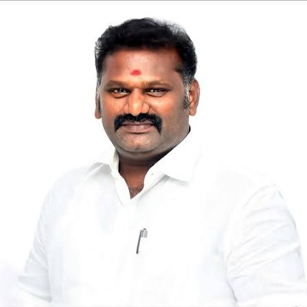
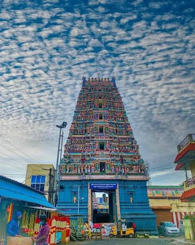
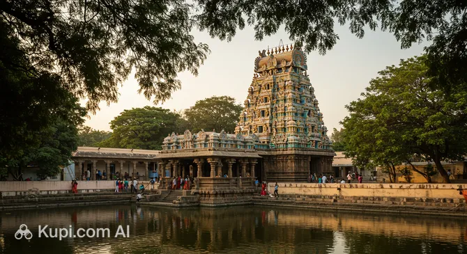

Welcome to Indian Constitution
The Constitution of India is the supreme law of our country. It is one of the most important documents in India because it explains how the country should be governed. The Constitution protects the rights of every citizen and ensures that everyone is treated equally. It provides justice, liberty, equality, and fraternity to all people. Every citizen should understand and respect the Constitution because it helps maintain peace, unity, and democracy in the nation.
The Constitution of India is the supreme legal framework that governs the nation, notable for being the longest and most comprehensive written constitution of any sovereign country in the world. Adopted by the Constituent Assembly on November 26, 1949, and brought into full effect on January 26, 1950—a day now celebrated nationwide as Republic Day—it serves as the foundational document that transformed India from a British dominion into an independent, sovereign, socialist, secular, and democratic republic. Crafted over nearly three years under the visionary leadership of the Drafting Committee’s chairman, Dr. B.R. Ambedkar, the Constitution was meticulously designed to unite a vast, diverse subcontinent marked by deep religious, linguistic, and cultural differences. It features a unique blend of rigidity and flexibility, allowing it to be amended over 100 times to evolve alongside changing societal needs while preserving its core democratic values. Structurally, it balances power through a federal system with a strong central bias, dividing responsibilities between the Union and the States, while maintaining a strict separation of powers among the legislature, the executive, and an independent judiciary. At its heart lies the Preamble, which solemnly resolves to secure justice, liberty, equality, and fraternity for all citizens. This vision is actively enforced through Part III, which guarantees justiciable Fundamental Rights—such as the right to equality and freedom of speech—and balanced by the Directive Principles of State Policy, which guide the government toward socio-economic welfare, alongside Fundamental Duties that outline the civic responsibilities of its people. By granting universal adult suffrage from its inception, the Indian Constitution established a robust democratic foundation that continues to protect individual liberties, uphold the rule of law, and guide the governance of over 1.4 billion people.
Fundamental Rights
- Right to Equality
- Right to Freedom
- Right against Exploitation
- Freedom of Religion
- Cultural and Educational Rights
- Right to Constitutional Remedies
Right to Equality
Guarantees equality before the law, prohibits discrimination based on religion, race, caste, sex, or place of birth, ensures equal employment opportunities, and abolishes untouchability and titles.
Right to Freedom
Right to Freedom (Articles 19–22): Protects citizens' freedoms of speech, expression, assembly, movement, and association. It also safeguards personal liberty (Right to Life) and provides protections against arbitrary arrest and detention
Right against Exploitation
Prohibits all forms of human trafficking, forced labor (begar), and the employment of children in hazardous factories or mines.
Freedom of Religion
Guarantees freedom of conscience and the right to freely profess, practice, and propagate any religion.
Cultural and Educational Rights
Protects the interests of linguistic and religious minorities by allowing them to conserve their language, culture, and establish and administer their own educational institutions
Right to Constitutional Remedies
Empowers citizens to directly approach the Supreme Court or High Courts to enforce these rights if they are violated, essentially guaranteeing the protection of all other rights.
- Respect the Constitution
- Protect Public Property
- Protect Environment
- Promote Harmony
My Area - Mangadu
Area :Mangadu, chennai
Mangadu is a second-grade urban local body located in the western periphery of Chennai within the Kanchipuram district of Tamil Nadu, India. Officially upgraded from a Town Panchayat to a Second Grade Municipality on December 7, 2021 (under G.O. No. 116), it functions as an integral part of the Chennai Metropolitan Area. The name "Mangadu" literally translates to "Mango Forest" in Tamil.
Key Administration & Geography
Office Location: 5, Vaikunda Perumal Koil Street, Mangadu, Chennai – 600122
Commissioner: Tmt. M. Rani M.A.
Jurisdiction: The municipality covers an area of approximately 13.64 square kilometers.
Divisions: The civic area is divided into 18 municipal wards for local administration and elections.
Citizen Services & Infrastructure
The municipal office runs multiple functional departments including Revenue, Town Planning, Engineering, and Public Health to manage the city. The official website offers citizens a direct way to view administrative reports, access council resolutions, and check important local contacts for hospitals, educational institutions, and police stations.

Area MLA
Name: Thenarasu
Mangadu does not have its own separate Member of the Legislative Assembly (MLA), as it falls under the Poonamallee (SC) Assembly constituency. Following the 2026 Tamil Nadu Legislative Assembly elections, the elected MLA representing the Poonamallee constituency is R. Prakasam of the Tamilaga Vettri Kazhagam party.
Famous Places in Mangadu


 >
>
Mangadu is one of the famous areas in Chennai. It is known for its religious importance and peaceful surroundings. Many people visit Mangadu every year to pray and explore its well-known places.
Arulmigu Kamakshi Amman Temple
The Arulmigu Kamakshi Amman Temple is the most famous temple in Mangadu. Thousands of devotees visit this temple every day. It is one of the important spiritual places in Chennai.
Mangadu Bus Stand
Mangadu Bus Stand connects the area with different parts of Chennai. It provides easy transportation for students, employees, and visitors.
Schools and Colleges
Mangadu has many schools and colleges that provide quality education. Students from nearby areas come here to study.